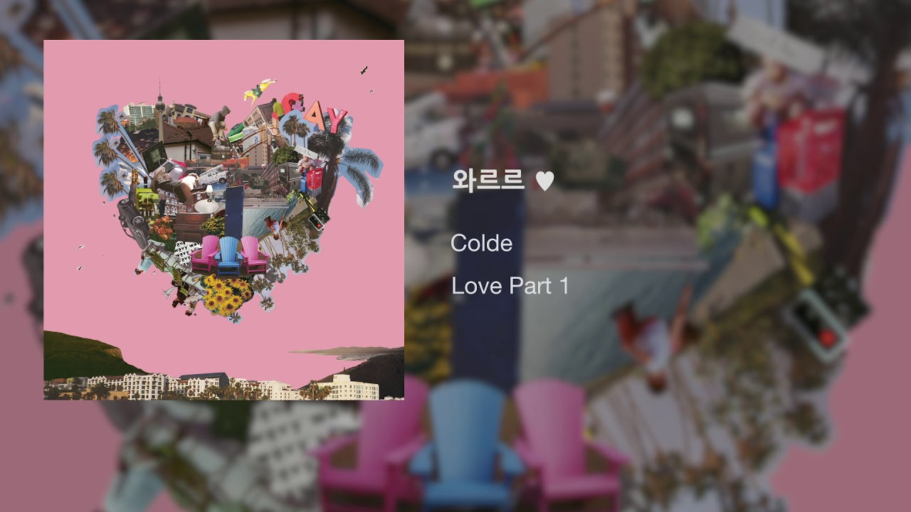
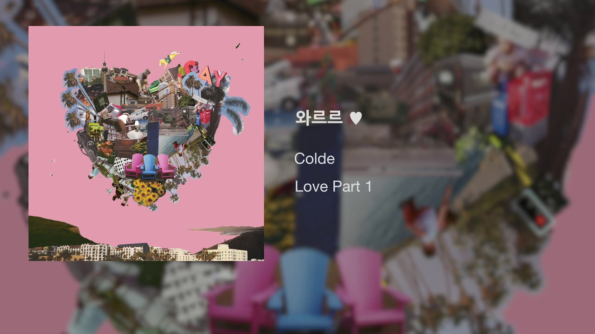
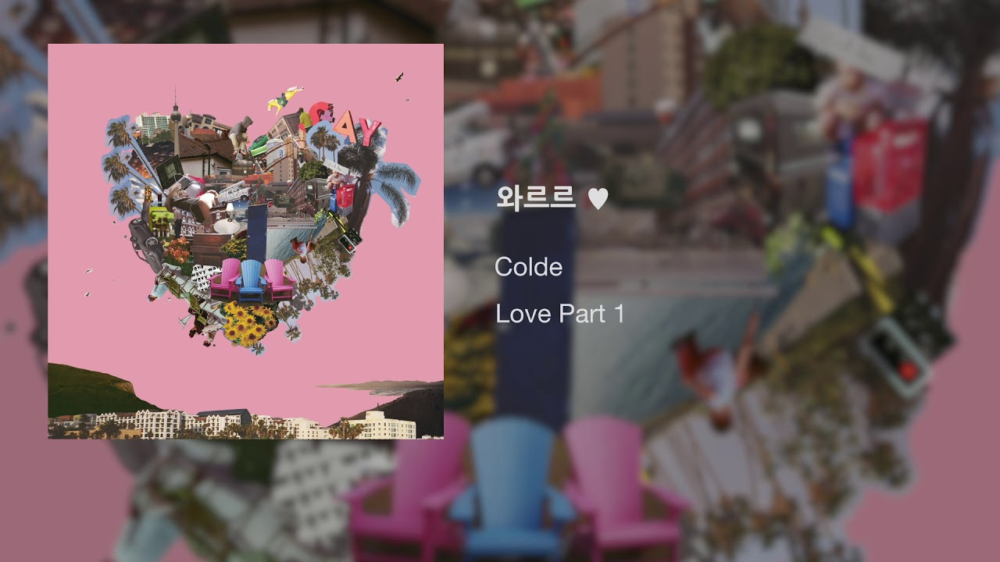
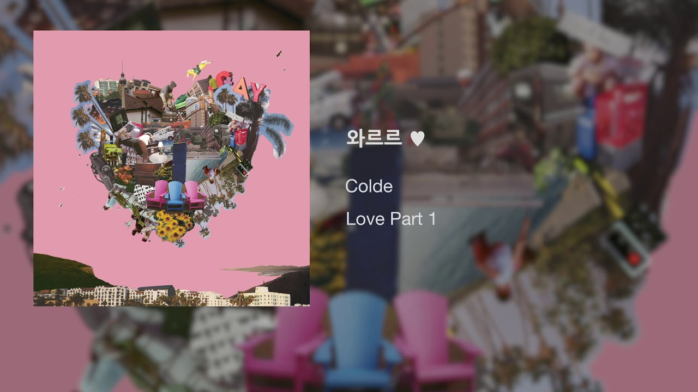

나이 28살! 주소 인천광역시 부평구 산곡3동 우성4차 아파트 길찾기 취미 헬스, 드라이브, 영화시청 수업참여 계기 직장을 다니면서 프로그램과 개발관련된 언어를 접하면서 유지보수가 아닌 나의 손으로 뭔가를 직접 만들어보고 싶어서 배우게 되었습니다. 좋아하는 노래 콜드 - 와르르 유튜브로 바로가기 
주소 인천광역시 부평구 산곡3동 우성4차 아파트 길찾기 취미 헬스, 드라이브, 영화시청 수업참여 계기 직장을 다니면서 프로그램과 개발관련된 언어를 접하면서 유지보수가 아닌 나의 손으로 뭔가를 직접 만들어보고 싶어서 배우게 되었습니다. 좋아하는 노래 콜드 - 와르르 유튜브로 바로가기 
취미 헬스, 드라이브, 영화시청 수업참여 계기 직장을 다니면서 프로그램과 개발관련된 언어를 접하면서 유지보수가 아닌 나의 손으로 뭔가를 직접 만들어보고 싶어서 배우게 되었습니다. 좋아하는 노래 콜드 - 와르르 유튜브로 바로가기 
수업참여 계기 직장을 다니면서 프로그램과 개발관련된 언어를 접하면서 유지보수가 아닌 나의 손으로 뭔가를 직접 만들어보고 싶어서 배우게 되었습니다. 좋아하는 노래 콜드 - 와르르 유튜브로 바로가기 